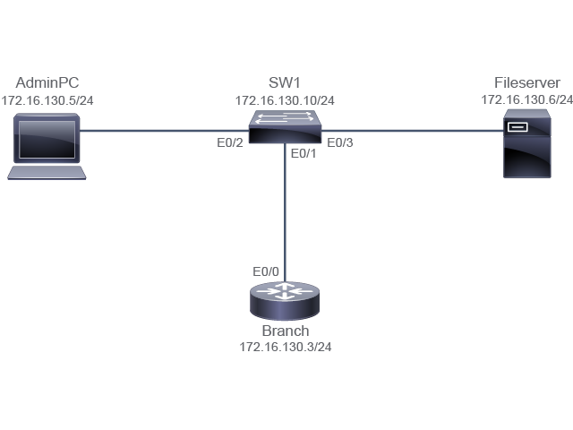

Scenario
Scenario
Note
Read the requirements in the Scenario carefully and use the Configuration Tips to help you do the required steps. If you need further assistance, refer to the Answer Key. Once you have completed the configuration specified, answer the questions.
The customer has requested CCS to configure a system logging (syslog) server to log all the messages. The FileServer is configured as a syslog server. Therefore, you must configure the Branch router and SW1 switch to forward the log messages to the FileServer.
- Configure logging on the Branch router to forward all messages that have severity levels up to 4 to the syslog server.
- Configure logging on the SW1 switch to forward all messages that have severity levels up to 5 to the syslog server.
© 2020 Cisco Systems, Inc.
Job AidsJob Aids
Note
If you shut down an interface on a real router or switch, the connected device will see it as "down/down." Due to virtualization specifics, Cisco IOL (Cisco IOS Software on Linux) behavior is slightly different. If you shut down an interface on a router or switch, the connected device will see it as "up/up." In Cisco IOL, the status of an interface can only be "up/up" or "administratively down/down." Also, in the virtual lab environment, all interfaces are Ethernet interfaces and not FastEthernet or GigabitEthernet interfaces, which you are likely to encounter in networks today.
Device Information
| Device | Interface | IPv4 Address | Remote | Interface | IPv4 Address |
|---|
| SW1 | VLAN 1 | 172.16.130.10/24 | VLAN 1 | _ | _ |
| SW1 | E0/1 | VLAN 1 | Branch | E0/0 | 172.16.130.3/24 |
| SW1 | E0/2 | VLAN 1 | AdminPC | E0/0 | 172.16.130.5/24 |
| SW1 | E0/3 | VLAN 1 | FileServer | E0/0 | 172.16.130.6/24 |
| Branch | E0/0 | 172.16.130.3/24 | SW1 | E0/1 | VLAN 1 |
| Branch | Lo0 | 172.16.2.2/32 | _ | _ | _ |
| AdminPC | E0//0 | 172.16.130.5/24 | SW1 | E0/2 | _ |
| Fileserver | E0/0 | 172.16.130.6/24 | SW1 | E0/3 | _ |
© 2020 Cisco Systems, Inc.
Configuration TipsConfiguration Tips
- Use the logging ip address command to configure the IP address of the host that will receive the system logging (syslog) messages.
- Use the logging trap level command to limit messages that are logged to the syslog servers based on severity. Use the logging trap command in the global configuration mode. You can use numbers or the word for the level in the logging trap command.
- Use the show logging command to display the state of system logging (syslog) and the contents of the standard system logging buffer. Use the show logging command in privileged EXEC mode.
- Use the show running-config | include logging command to display the information about the configured logging host and the configured severity of the messages that are logged.
© 2020 Cisco Systems, Inc.
Answer KeyAnswer Key
- Configure logging on the Branch router to forward all messages that have severity levels up to 4 to the syslog server.
Branch> enable
Branch# configure terminal
Enter configuration commands, one per line. End with CNTL/Z.
Branch(config)# logging host 172.16.130.6
Branch(config)# logging trap warnings
- Configure logging on the SW1 switch to forward all messages that have severity levels up to 5 to the syslog server.
SW1(config)# logging host 172.16.130.6
SW1(config)# logging trap notifications
© 2020 Cisco Systems, Inc.
QuestionsQuestions
© 2020 Cisco Systems, Inc.